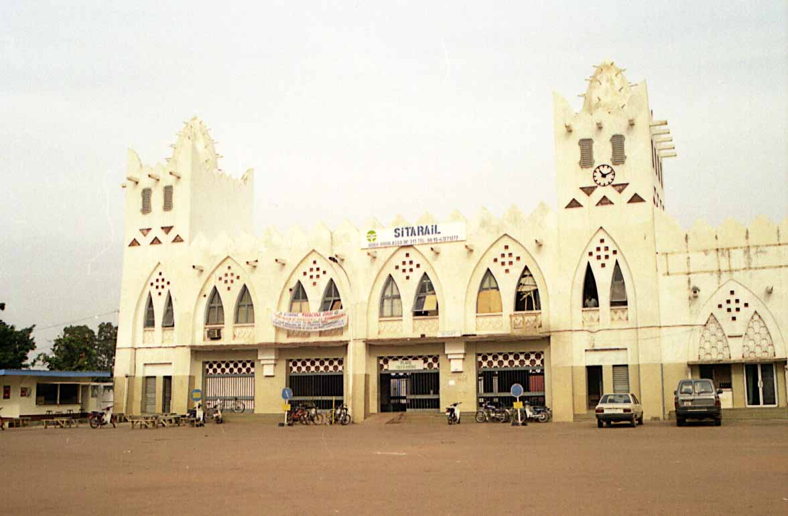

L'ancienne gare ferroviaire de Bobo-Dioulasso est un édifice imposant de style colonial. Avec ses murs ocre, ses arcades et sa grande horloge, elle est l'un des bâtiments les plus emblématiques de la ville. Bien que l'activité ferroviaire ait fortement diminué, le site conserve une atmosphère nostalgique et reste un témoignage architectural impressionnant.
Construite dans les années 1930, la gare faisait partie de la célèbre ligne de chemin de fer Abidjan-Niger. Elle a été le moteur du développement économique de Bobo-Dioulasso, transformant la ville en un carrefour commercial majeur entre la Côte d'Ivoire et le Sahel. Aujourd'hui, c'est un monument historique qui rappelle l'importance du rail dans l'histoire ouest-africaine.